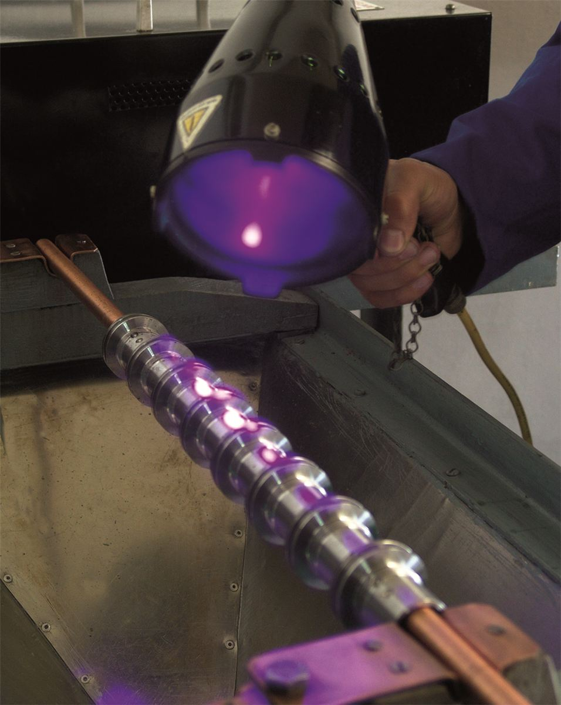

Kalite Kontrol Süreçlerimiz
Kalite Kontrol Süreçlerimiz
Uçar Metal olarak kaliteyi yalnızca üretim sonunda değil, üretimin her aşamasında ön planda tutuyoruz. Giriş kalite kontrol, proses kontrol ve final kalite kontrol süreçlerimizle ürünlerin müşteri taleplerine ve teknik gerekliliklere uygunluğunu takip ediyoruz.
Giriş Kalite Kontrol
Üretimde kullanılacak hammaddeler ve tedarik edilen malzemeler, belirlenen teknik şartlara uygunluk açısından kontrol edilir. Malzemelerin ölçüsel, görsel ve gerekli belge kontrolleri yapılarak üretime uygunluğu değerlendirilir.
Proses Kalite Kontrol
Üretim sırasında parçaların teknik resimlere ve müşteri taleplerine uygunluğu, belirlenen kontrol aralıklarında ölçüm ekipmanlarıyla doğrulanır. Ölçüsel ve görsel kontrollerle olası uygunsuzlukların erken aşamada tespit edilmesi ve üretim kalitesinin sürekliliği hedeflenir.
Final Kalite Kontrol
Üretimi tamamlanan parçalar, sevkiyat öncesinde teknik resim ve müşteri şartlarına göre kontrol edilir. Ölçüsel ve görsel kontroller sonucunda uygunluğu doğrulanan ürünler, belirlenen ambalajlama ve sevkiyat şartlarına göre hazırlanır.
UV Çatlak Kontrolü
Müşteri isteğine bağlı olarak, Multiflux AC/DC ultraviyole çatlak kontrol cihazı ile parçaların çatlak kontrolü gerçekleştirilmektedir.
Kalite Belgelerimiz